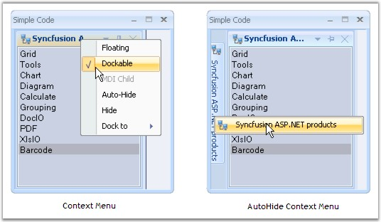
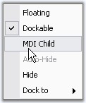
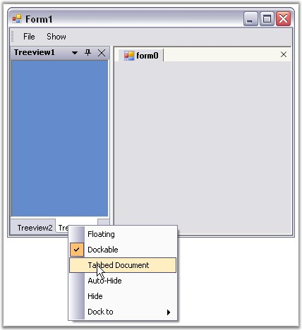

A context menu will be displayed whenever the user right clicks the caption bar or clicks the menu button in the caption bar. EnableContextMenu property should be true for displaying the context menu. By default it is true.
When the docked control is in autohide mode and when the auto hide tab is right-clicked, an unique context menu will be displayed, similar to Visual Studio. EnableAutoHideTabContextMenu property should be true for this. By default this value is true.
|
[C#]
this.dockingManager1.EnableContextMenu = true; this.dockingManager1.EnableAutoHideTabContextMenu = true; |
|
[VB.NET]
Me.dockingManager1.EnableContextMenu = True Me.dockingManager1.EnableAutoHideTabContextMenu = True |
The below images illustrates context menu features.

Figure 69: Docking Manager Context Menu
 Note: If MDIContainer property of the form
is set to true, then the context menu will include MDI child option. You can
observe that the MDI Child option is disabled for the above image. This is
because MDIContainer property is false for this case.
Note: If MDIContainer property of the form
is set to true, then the context menu will include MDI child option. You can
observe that the MDI Child option is disabled for the above image. This is
because MDIContainer property is false for this case.

Figure 70: Context Menu displaying MDI Child option, when MDIContainer = "True"
Context Menu for TabbedControls
Context menu for the tabbed controls is similar to the default context menu like the above image. When TabbedMDIManager component is used, context menu will include TabbedDocument instead of MDI child.

Figure 71: Context Menu for Tabbed Controls
See Also
Dock Context Menu Event, How to display context menu of a docked control at a specified point?